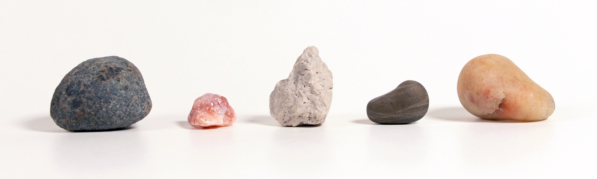

about this project —
Hello hello!
Welcome to my archival project — a way for me to digitally document my collection of precious stones. A lot of elements are still a work in progress, so this is only a preview of what is to come.

Hello hello!
Welcome to my archival project — a way for me to digitally document my collection of precious stones. A lot of elements are still a work in progress, so this is only a preview of what is to come.